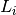
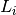
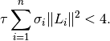
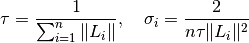
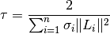
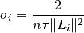

douglas_rachford_pd_stepsize¶
-
odl.solvers.nonsmooth.douglas_rachford.douglas_rachford_pd_stepsize(L, tau=None, sigma=None)[source]¶ Default step sizes for
douglas_rachford_pd.Parameters: - L : sequence of
Operatoror float The operators or the norms of the operators that are used in the
douglas_rachford_pdmethod. ForOperatorentries, the norm is computed withOperator.norm(estimate=True).- tau : positive float, optional
Use this value for
tauinstead of computing it from the operator norms, see Notes.- sigma : tuple of float, optional
The
sigmastep size parameters for the dual update.
Returns: - tau : float
The
taustep size parameter for the primal update.- sigma : tuple of float
The
sigmastep size parameters for the dual update.
Notes
To guarantee convergence, the parameters
 ,
,  and  need to satisfy
and  need to satisfy
This function has 4 options,
/ given or not
given.
given or not
given.If neither
nor are given, they are chosen as:
If only
is given, is set to:
If only
is given, is set
to:
If both are given, they are returned as-is without further validation.
- L : sequence of